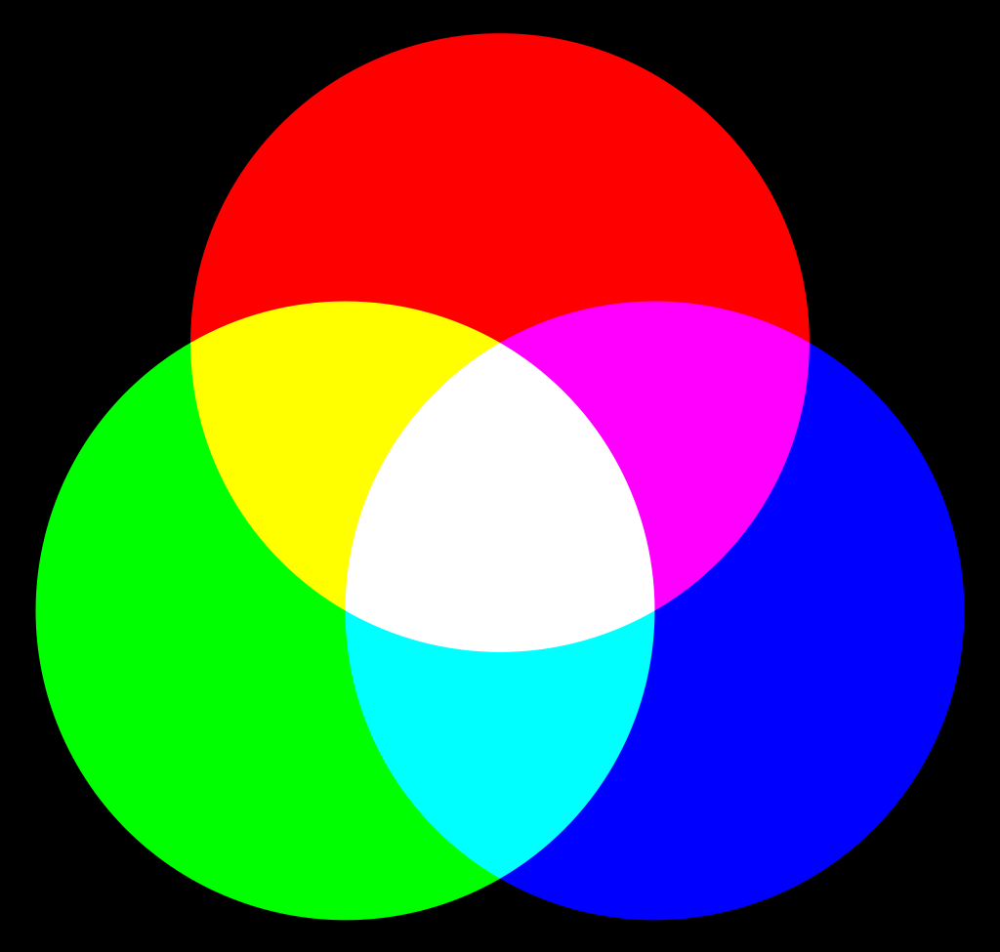
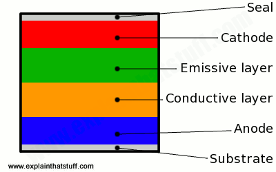

Website – Bild
Bild
Digitale Bilder
Licht ist der sichtbare Teil elektromagnetischer Strahlung. Dabei haben verschiedene Wellenlängen unterschiedliche Farben. Die Amplitude der Wellen ist dabei die Intensität bzw. die Helligkeit des Lichts.
Unsere Augen besitzen Stäbchen und Zapfen. Die Stäbchen sind dabei für das Wahrnehmen von hell und dunkel zuständig, während die Zapfen dafür sorgen, dass wir Farben sehen können. Allerdings besitzen unsere Augen nur Zapfen für rotes grünes und blaues Licht. Unser Gehirn kann daraus nach dem Schema der additiven Farbmischung auch alle Farben dazwischen erkennen.
Das Prinzip der additiven Farbmischung machen sich auch Bildschirme zu nutzen. Diese besitzen Pixel die rot, grün und blau (RGB) leuchten. Diese Pixel sind so klein, dass beim Betrachten mit etwas Abstand ein Bild entsteht.

Komprimierung
Professionelle Digitalkameras können Bilder im Sogenannten RAW-Format machen. Bei diesem Format werden Sensordaten mit verschiedenen Bitraten einzeln gespeichert, wodurch man ein detaillierteres Bild erhält.
Die Komprimierung funktioniert über Redundanz- und Irrelevanz Reduktion. So z.B. auch bei JPEG, einer gängigen Komprimierung. Bei der JPEG-Komprimierung wir das Bild in 8x8 Pixel große Blöcke geteilt. Durch wir durch Korrelation der Pixel innerhalb des Blocks sind danach oft nur wenige Koeffizienten relevant. Die irrelevanten Koeffizienten werden bei der Komprimierung ungenauer dargestellt.
OLED-Displays
OLED Bildschirme funktionieren ähnlich wie andere Bildschirmtypen. Allerdings benutzen sie nicht mehrere Schichten, wie z.B. LCD Displays, die ein Licht von hinten durch kleine Flüssigkristalle strahlen welche, sobald sie unter Strom stehen, das Licht brechen. Eine OLED dagegen besitzt zwei Elektroden-Schichten, von denen eine transparent ist. Zwischen den Elektroden befindet sich organische Halbleiter. Werden diese nun mit Strom versorgt leuchtet jedes QLED einzeln, wodurch sich ein sehr Kontrastreiches Bild ergibt, das vor allem für kräftige schwarzwerte bekannt ist.
Das Bessere Bild ist jedoch nicht der einzige Vorteil der QLED Technik. Dadurch das sie aus einer einzigen Schicht bestehen sind sie sehr viel Dünner und zudem flexibler als herkömmliche Displays. Des Weiteren Sparen sie deutlich an Energie ein, da Schwarze Pixel abgeschaltet sind.
